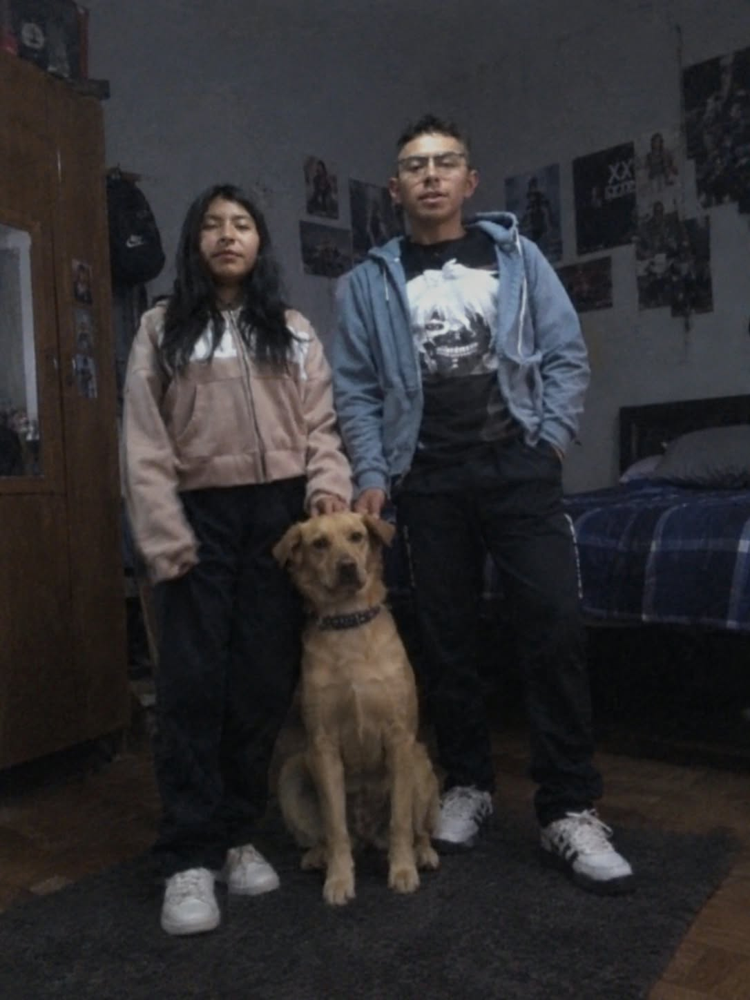

Un adiestrador es la persona que enseña y guía a un cachorro para que aprenda buenos comportamientos y diferentes comandos.
El entrenamiento debe realizarse con paciencia, constancia y refuerzo positivo, premiando los buenos comportamientos y evitando los gritos o castigos físicos.
Un buen adiestrador también busca crear confianza y comunicación con su mascota, respetando su ritmo de aprendizaje y sus necesidades.
